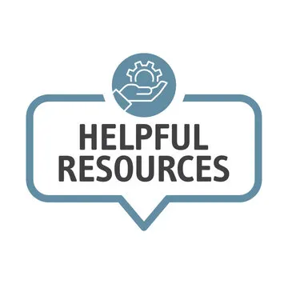
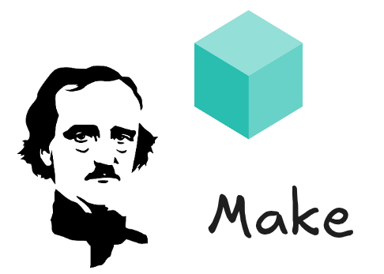
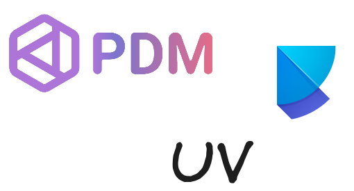

Iraitz’s blog
About
Iraitz’s blog
Author
Iraitz Montalbán
Categories
All
(8)
books
(1)
cheatsheets
(1)
clean code
(1)
dependencies
(1)
docs
(1)
kubernetes
(1)
news
(1)
orchestration
(1)
pipelines
(1)
python
(5)
resources
(1)
skylos
(1)
skypilot
(1)
slurm
(1)
tasks
(1)
Dead code out
python
clean code
skylos
Skylos is one of those functionalities that will help you remove dead code but also check for vulnerabilities in your code. This is particularly convenient when translating…
Jan 19, 2026
Iraitz Montalban
Computing for experiments
slurm
kubernetes
skypilot
When running experiments — whether large-scale quantum simulations or heavy AI workloads such as model training and fine-tuning — managing compute, data, and software…
Jan 17, 2026
Iraitz Montalban
Orchestration
orchestration
pipelines
python
At some point, other than scheduling tasks you may need to orchestrate some complex workflows. It often requires setting up complex architectures and thinking about the…
Aug 3, 2025
Iraitz Montalban

Helpful resources
resources
books
cheatsheets
Every once in a while I ran into some interesting resources and I never know where to put them. Somehow bookmarks don’t seem to work for resources that I use less frequently…
Jul 15, 2025
Iraitz Montalban

Task automation
tasks
python
Keeping track of the tasks to run and remembering commands might be challenging, at least it is for me. That is why many repositories already count with task running files…
Jul 5, 2025
Iraitz Montalban

Python project management
dependencies
python
There are som many
requirements.txt
files out there. Oh man. I do struggle every time somebody asks for the requirements file. There are so many options much better than that.
Jul 3, 2025
Iraitz Montalban
Documentation and sites
docs
python
Documentation sites are probably one of the most valuable resources a developer or researcher can have. A good documentation site is priceless. I have been developing…
Jun 26, 2025
Iraitz Montalban
Welcome
news
Hi! My name is Iraitz Montalbán and I love to mess around with technology.
Jun 25, 2025
Iraitz Montalban
No matching items